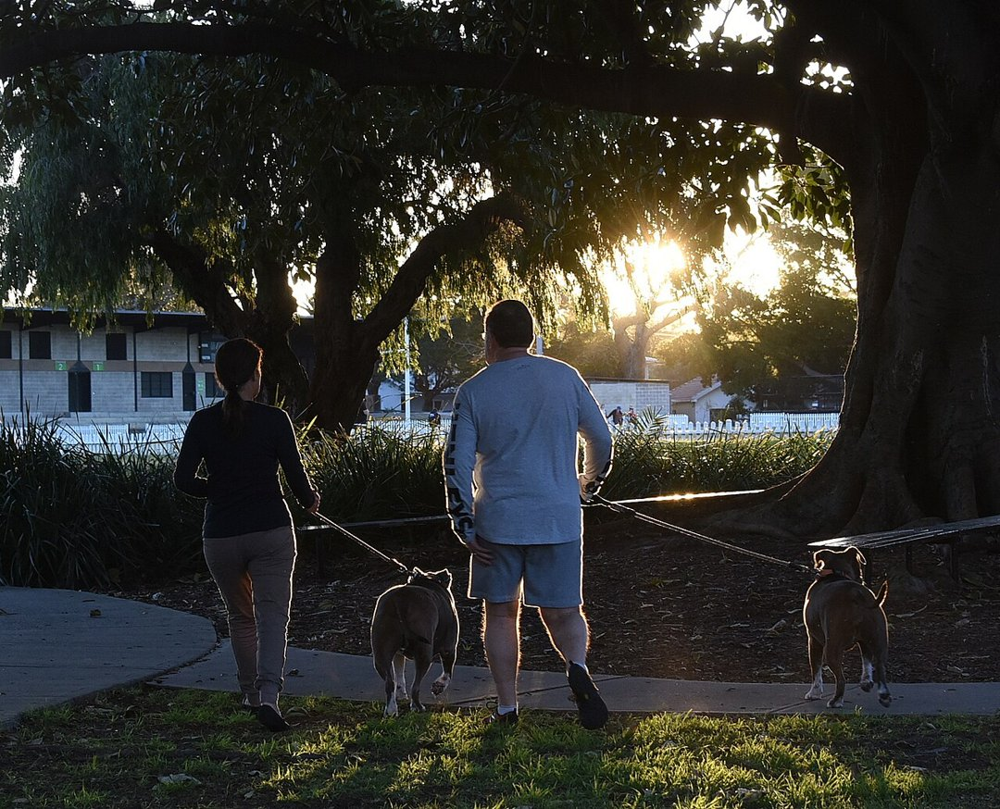

📷 사진 1 자리

▲ 짧은 목줄로 반려견과 산책하는 모습 · 사진: Sardaka / CC BY-SA 4.0 / 위키미디어 공용
진돗개 목줄을 길게 늘어뜨린 채 산책하던 견주에게 법원이 벌금 500만 원을 선고했어요. 지나가던 자전거가 줄에 걸려 넘어지면서 운전자가 머리를 크게 다쳤거든요. 판결에 나온 '2m'는 이미 2022년부터 시행 중인 산책 규정이에요.
2m는 법으로 정한 기준
동물보호법 시행규칙은 2개월령 이상 반려견과 외출할 때 목줄이나 가슴줄을 2m 이내로 하라고 정해 두었어요. 2022년 2월 11일부터 시행됐어요.
줄 전체가 2m보다 길어도 괜찮아요. 줄 중간을 잡는 식으로 보호자와 개 사이 길이를 2m 안으로 유지하면 규정을 지킨 거예요. 아파트 엘리베이터나 복도 같은 공용 공간에서는 개를 안거나 목덜미를 잡아야 하고요.
어기면 과태료
목줄 기준을 어기면 과태료가 붙어요. 2022년 시행 당시 기준은 이래요.
| 위반 횟수 | 과태료 |
|---|---|
| 1차 | 20만 원 |
| 2차 | 30만 원 |
| 3차 이상 | 50만 원 |
과태료는 사고가 없어도 줄 길이만으로 매겨질 수 있어요. 늘였다 줄였다 하는 자동 리드줄을 쓴다면 사람이 많은 길에서는 잠금 버튼으로 길이를 짧게 고정해 두세요.
사고가 나면 처벌은
이번 사건은 지난해 10월 31일 전남 담양의 한 도로에서 일어났어요. 견주는 목줄을 2~5m로 늘어뜨린 채 진돗개를 산책시켰고, 그 사이를 지나던 자전거가 줄에 걸렸어요. 운전자는 외상성 뇌내출혈과 두개골 골절로 전치 8주 진단을 받았어요.
광주지법은 동물보호법 위반과 과실치상 혐의를 인정했어요. 재판부는 사람이 많이 오가는 도로였던 만큼 목줄을 2m 이하로 유지하고 주변을 살필 의무가 있었다고 봤어요. 피해자에게 용서받지 못한 점도 형을 정할 때 고려했고요.
형법상 과실치상은 500만 원 이하 벌금 등으로 처벌해요. 형사 처벌과 별개로 피해자가 치료비나 위자료를 청구하는 민사 소송도 따로 낼 수 있어요.
목줄 규정을 어겼을 때 과태료는 20만 원부터지만, 사람이 다치면 부담의 단위가 달라져요. 이번처럼 형사 벌금에 민사 배상까지 붙을 수 있어요. 산책할 때 줄 길이를 짧게 쥐는 건 남을 위한 배려이면서 내 책임을 줄이는 일이기도 해요.
해가 짧아지는 겨울에는 저녁 산책길이 어두워져 줄이 잘 보이지 않아요. 반사띠가 달린 목줄이나 밝은 색 줄로 바꿔 두는 것도 방법이에요.
함께 보면 좋은 이슈